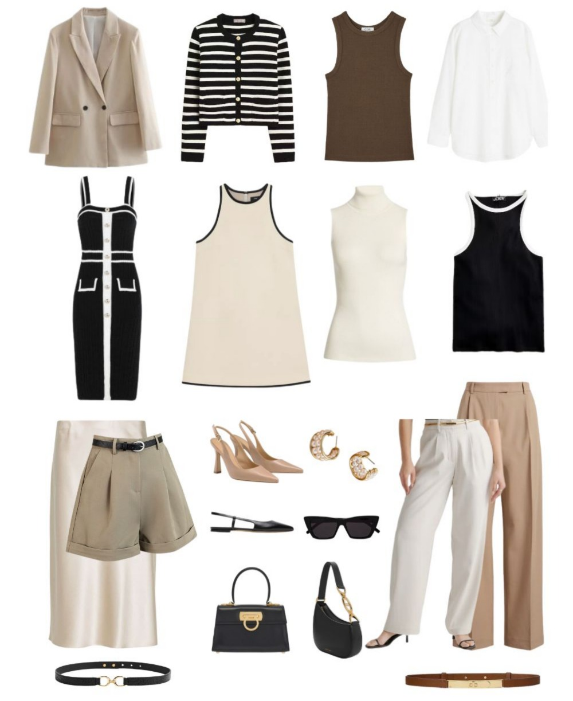

Welcome To Serenity Studio
Serenity Studio is a lifestyle brand focused on creating timeless, sustainable, and stylish wardrobes that can adapt to every season. We prioritize curating versatile pieces that reflect personal identity while incorporating eco-conscious fashion choices. We believe that style should not only enhance your life but also contribute to a more sustainable and mindful world. Through Serenity Studio, we aim to inspire individuals to build functional, durable wardrobes that reflect their unique personality and values.

A capsule wardrobe is a concept that encourages owning a limited collection of high-quality, versatile clothing pieces. These items are designed to be easily mixed and matched, offering numerous style options despite their minimal quantity. By focusing on durable and practical clothing suitable for various occasions, a capsule wardrobe simplifies your daily routine while reducing overconsumption. This approach promotes mindful fashion choices and creates a more organized and clutter-free closet.
Beyond simplifying your wardrobe, a capsule wardrobe encourages mindful spending. Investing in timeless, durable pieces helps you avoid chasing fleeting trends and impulsive purchases, ultimately saving money in the long run. This shift in mindset allows you to build a personal style that reflects your true preferences and aligns with your lifestyle. By intentionally curating your wardrobe, you gain control over your fashion choices and prioritize quality over quantity.
Additionally, a capsule wardrobe fosters creativity in styling. With fewer items, you learn to maximize each piece's potential by experimenting with different combinations and accessories. This not only keeps your outfits fresh and interesting but also boosts your confidence in expressing yourself through fashion. Ultimately, a capsule wardrobe streamlines your life while helping you maintain a polished and effortless look every day.